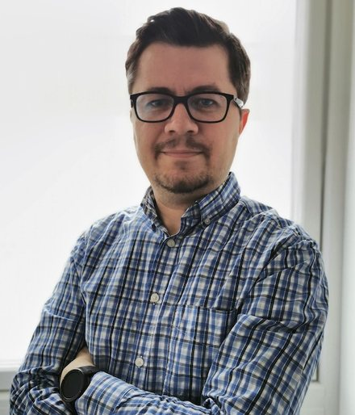

Ferhat Ozgur Catak
Professor of Cyber Security · University of Stavanger, Norway
Ferhat Ozgur Catak is a Professor of Cyber Security at the University of Stavanger (UiS), Norway. His work covers how real systems are attacked and how to keep them secure, in three areas: penetration testing and malware analysis, quantum technologies for security, and trustworthy AI.
He teaches ethical hacking and software security at UiS. Before joining UiS in 2021 he worked on cryptography and malware analysis at TÜBİTAK BİLGEM in Türkiye, and on AI reliability and data privacy at NTNU and Simula Research Laboratory in Norway. He created the public Mal-API-2019 malware dataset and the QuantumUQ library for quantum machine learning.
Research areas
Traditional, hands-on cyber security: finding vulnerabilities before attackers do, and understanding how malicious software behaves so it can be detected.
Ethical hacking · web application security · malware datasets · behavioural malware detection · intrusion and DDoS detection
Read more →
How quantum computing changes security, and how to make quantum learning reliable: theory for learning from finite measurements, uncertainty tools, and quantum-secured communication.
Quantum learning theory · quantum machine learning · QuantumUQ · quantum key distribution · post-quantum cryptography
Read more →
AI systems that stay secure, private and dependable under attack: adversarial robustness, uncertainty quantification, LLM security and privacy-preserving learning.
Adversarial machine learning · uncertainty quantification · LLM and agentic AI security · federated learning · homomorphic encryption
Read more →
Teaching
At the University of Stavanger I teach:
- DAT505 Ethical Hacking (MSc): penetration testing methods and tools.
- DAT250 Information and Software Security (BSc): secure coding and the OWASP Top 10.
- DAT945 Secure and Robust AI Model Development (PhD): trustworthy AI.
- E-DAT301 Cyber Security (continuing education).
- DAT620 Project in Computer Science (MSc).
Teaching and supervision →
Collaboration and students
I welcome joint proposals (Horizon Europe, the Research Council of Norway, MSCA and industry projects) and enquiries from prospective PhD and MSc students in offensive security, quantum security and trustworthy AI. Write to f.ozgur.catak@uis.no with a short description of your background and interests.